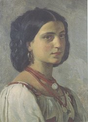

Časopis Lumír
|
LUMÍROVCI neboli KOSMOPOLITNÍ ŠKOLA
Lumírovci dostali název podle beletristického časopisu Lumír, ve kterém publikovali svá díla. Tento časopis vycházel v letech 1873 až 1940 a byl nejdéle vycházejícím literárním časopisem v Čechách. Lumír založil Neruda s Hálkem, ale orgánem nové generace spisovatelů se stal až po roce 1877, kdy se v jeho čele ocitl Josef Václav Sládek. Kromě Sládka do něj přispívali Jaroslav Vrchlický, Julius Zeyer a další lumírovci. Prostor zde dostávali i ruchovci nebo májovci. Na rozdíl od nich se lumírovci zaměřovali na cizí literatury a překladatelskou činnost, proto se někdy označují termínem kosmopolitní škola. V časopise vycházela původní česká tvorba a překlady zahraniční literatury. Věnoval se také historii a literární vědě. Nejprve šlo o týdeník, později o desetideník. Ve 20. století se vedení časopisu ujal Viktor Dyk, to už měl ale Lumír své nejslavnější období za sebou.
|

Zeyer, Sládek a Vrchlický
|
Jaroslav Vrchlický (1853-1912)
Emil Frída se narodil v Lounech a zemřel v Domažlicích. Studoval filozofii a historii, pobýval v Itálii jako vychovatel a později působil jako profesor srovnávacích dějin literárních. Oženil se s dcerou spisovatelky Sofie Podlipské Ludmilou, která ho podváděla s jiným mužem. Vrchlický patřil k nejplodnějším českým autorům. Jenom básnických sbírek napsal více než osmdesát! Kromě toho se věnoval dramatické tvorbě. Psal komedie – Noc na Karlštejně i tragédie – Hippodamie (Námluvy Pelopovy, Smír Tantalův, Smrt Hippodamie). Překládal z francouzštiny (Hugo), italštiny (Dante), němčiny (Goethe) a angličtiny (Whitman). Básnická tvorba Jaroslava Vrchlického má blízko k francouzským parnasistům a jejich akademickému idealismu. Jeho poezie je jazykově velmi vytříbená, ale častokrát v ní vítězí forma nad obsahem.
Fotografický ateliér Langhans: Jaroslav Vrchlický
Vrchlického epigoni
Velikost Jaroslava Vrchlického dokazuje i to, že měl řadu napodobitelů (Bohdan Kaminský, Antonín Klášterský...). Tito epigoni většinou nepřinesli do literatury nic nového. Výjimkou byl režisér Jaroslav Kvapil (1868-1950), autor libreta k Dvořákově Rusalce a divadelní hry Princezna Pampeliška.
Zjisti přesný význam slova epigon.
|
Vrchlického lyrika
Vrchlický debutoval básnickou sbírkou Z hlubin. Z jeho bohaté lyrické tvorby patří k nejlepším knihy Sny o štěstí, Rok na Jihu, Eklogy a písně, Dojmy a rozmary, Poutí k Eldorádu, Hudba v duši, Hořká jádra, È morta, Okna v bouři nebo Meč Damoklův. Věnoval se hlavně milostné poezii.
Jaroslav Vrchlický: Zlomky epopeje
Vlastní epickou tvorbu shrnul Vrchlický do rozsáhlého cyklu Zlomky epopeje, nazvaného podle jedné ze svých sbírek. Zařadil sem například knihy Vittoria Colonna, Duch a svět, Sfinx, Dědictví Tantalovo, Brevíř moderního člověka, Skvrny na slunci, Mýty (Legenda o sv. Prokopu), Hilarion, Twardowski, Selské balady, Bozi a lidé nebo Bar Kochba.
Jaroslav Vrchlický: Noc na Karlštejně
Zápletka komedie Noc na Karlštejně vychází z pověsti, podle níž Karel IV. zakázal všem ženám přístup na svůj hrad Karlštejn. Jeho manželka se rozhodne nesmyslné nařízení porušit a vloudí se na hrad v přestrojení za páže.
|
Která z básní Jaroslava Vrchlického tě zaujala nejvíce? Proč?
Znáš i jiné básně tohoto autora? Vyber si jakoukoliv z jeho básní a nauč se ji recitovat zpaměti.
Které básnické formy zmiňuje Vrchlický ve své básni Má poetika? Co o nich víš?
Najdi v díle Jaroslava Vrchlického příklady těchto forem. Věnoval se i jiným žánrům?
Která z ukázek má formu sestiny? Co je sestina?

Jaroslav Čermák: Studie dívky
Který francouzský básník napsal obdobný cyklus epických básní zachycující osudy lidstva?
Srovnej oba básnické cykly.
Co víš o Tantalovi a Hippodamii?
Co je brevíř?
Kdo byli Vittoria Colonna, Bar Kochba a Twardowski?

Aleš: Karlštejnský havran
Podle Noci na Karlštejně byl natočen slavný filmový muzikál. Srovnej oba scénáře.
Odpovídá Vrchlického komedie historické skutečnosti?
Co víš o Karlu IV.?
|
Julius Zeyer (1841-1901)
Zeyerovým rodištěm byla Praha, pobýval ve Vodňanech a skonal v Praze. Otec pocházel z francouzského a matka z německého jazykového prostředí, měl ale českou chůvu. Rodiče chtěli, aby převzal rodinný podnik na zpracování dřeva, syn se však věnoval výhradně literatuře. Cestoval po Evropě a Orientu, byl vychovatelem v Rusku a na pražské univerzitě studoval starověké kultury a filozofii. Zůstal svobodný. Zeyer psal originální parafráze dávných nebo orientálních příběhů – cykly Obnovené obrazy, Z letopisů lásky, Vyšehrad nebo Karolinská epopeja a eposy V soumraku bohů (islandské ságy) nebo Grizelda (Dekameron). Autobiografické rysy najdeme v lyrickoepické básni Troje paměti Víta Choráze a románu Jan Maria Plojhar. Dále napsal romány Ondřej Černyšev a Román o věrném přátelství Amise a Amila, romaneto Dům U tonoucí hvězdy a řadu próz – Fantastické povídky, Tři legendy o krucifixu, Zahrada mariánská, Blaho v zahradě kvetoucích broskví atd. Z dramat je nejznámější pohádka Radúz a Mahulena a komedie dell’arte Stará historie.
Která díla jsou součástí cyklů Obnovené obrazy, Z letopisů lásky, Karolinská epopeja a Tři legendy o krucifixu?
Zeyerova tvorba
Zeyer bývá považován za novoromantika. Pro jeho tvorbu je typická záliba v exotických látkách, mýtech, pověstech a fantastických námětech, vypjatá citovost a mystická zbožnost. Nezvyklé náměty můžeme chápat jako únik od chmurné reality do vysněného světa středověkých rytířů a pohanských mýtů, kdy lidé prožívali opravdové city, byli schopni lásky až za hrob a čest nebo ideály nebyly pouhým slovem. Zeyerovi se zdálo, že jeho díla nejsou dostatečně oceňována. Připadal si nepochopený, žil v ústraní a nesnášel malé české poměry. Jeho tvorbu oceňovala i nová generace dekadentů. Spolupracoval s malířkou Zdeňkou Braunerovou a sochařem Františkem Bílkem. Byl pohřben na vyšehradském Slavíně.
Srovnej tři ukázky Zeyerovy tvorby. Co mají společného? V čem se liší?
Najdi v Zeyerových dílech romantické rysy.
Aleš: Volavka
|
Julius Zeyer: Jan Maria Plojhar
Jan Maria Plojhar je zhnusen provinční atmosférou v Čechách, a proto cestuje po světě. Prožije vášnivý románek s kněžnou Dragopulos, ale ta ho brzy odvrhne. Jan je vážně zraněn v souboji a zmítá se na pokraji smrti. Navíc ho mamonářský švagr připraví o rodinné sídlo Havranice, ke kterému měl niterný vztah. Plojhar se odjíždí léčit do Itálie, kde se seznamuje s Catarinou. Jejich láska ale končí tragicky. Plojhar vážně onemocní a zemře. Catarina bez něj nechce žít a raději spáchá sebevraždu.
V Zeyerově románu se propojuje současnost s bájnou minulostí. Catarina vypije jed v poslední hodině Janova života, aby jejich duše vstoupily do nebe společně. Symbolicky si nasadí na hlavu čelenku, která byla nalezena v hrobě etruské dívky. Ta se nechala dobrovolně pohřbít s milovaným mužem.
Julius Zeyer: Radúz a Mahulena
Dramatická pohádka Radúz a Mahulena se odehrává v Tatrách. Kralevic Radúz zabloudí během lovu do země krále Strojmíra, nepřítele svého otce. Zabije bílého jelena princezny Mahuleny a za trest je přikován ke skále. Mahulena se do Radúze zamiluje a osvobodí ho. Její matka Runa ale Radúze prokleje. Jakmile kralevice políbí jiná žena, zapomene na Mahulenu. Kletbu naplní Radúzova matka a nešťastná Mahulena prosí zemi, aby ji proměnila ve strom. Radúz chodí jako ve snách k topolu, kde je uvězněna. Jeho matka se rozhodne strom porazit, ale z kmene začne prýštit krev. Až teď se Radúzovi vrací paměť. Strom se rozlomí a vyjde z něj krásná Mahulena.
Julius Zeyer: Román o věrném přátelství Amise a Amila
Složitý děj Románu o věrném přátelství Amise a Amila spřádá dohromady několik mýtů a legend. Přátelé Amis a Amil jsou si k nerozeznání podobni, protože jde o potomky dvou dcer Raula a Belisanty. Od poustevníka Gastona, který jejich babičku miloval, se dozvídají, že uctívala sochu boha Adóna, ale když ji zničil, Belisantě puklo srdce. Amil se zamiluje do princezny Jolanty a s přítelovou pomocí ji získá za manželku. Amis vzplane láskou k islandské princezně Thorgerdě, ale ta ho nemiluje. Její jedinou touhou je stát se valkýrou jako její babička. Dozví se, kde je zakopán kouzelný pás valkýr, ale když ho najde, Amis ji o něj připraví. Thorgerda se prohlásí za jeho otrokyni a vezme si Amise za muže, nakonec se jí ale podaří pás získat a uvrhne na nenáviděného manžela malomocenství. Amise může vysvobodit pouze krvavá oběť dvou Amilových dětí. Vše končí dobře díky zázraku Panny Marie. Thorgerda je přemožena a děti oživeny.
Další lumírovci a jejich díla
Irma Geisslová: Imortely
|

Fotografický ateliér Langhans: Julius Zeyer
Převyprávěj příběh o Načiketasovi. Ze které oblasti a doby pochází?
Jak se tento příběh vztahuje k ději románu?
Přelož řecké jméno Dragopulos do češtiny.
Maxmilián Pirner: Náměsíčná
Jaký je vztah mezi hlavními postavami Zeyerova dramatu – Strojmírem, Runou, Prijou, Živou, Mahulenou, Radúzem a Nyolou?
Charakterizuj jednotlivé postavy.

Hynais: Poezie
K čemu sloužil Cernnunos a Bifrost?
Nakresli ilustraci k Zeyerovu románu.
Hynais: Zima
|
Internetové stránky
Vrchlický: Noc na Karlštejně
Vrchlický: Moderní básníci angličtí
Vrchlický: Má vlast, básně
Zeyer: Ctirad, báseň
Ženatová: Středověká francouzská hrdinská epika a její odraz v české literatuře, diplomová práce
Geisslová: Imortely
Lumír
Tipy
Lumír, obnovená verze časopisu
Filmy
Radúz a Mahulena, režie P.Weigel
Noc na Karlštejně, režie Z.Podskalský
|
Doporučená četba
Balajka, Bohuš: Jaroslav Vrchlický, Melantrich, Praha 1979
Kvapil, Josef Šofferle: Gotický Zeyer, Praha 1942
O národní literaturu, Z úvah a polemik doby májovců a lumírovců, Melantrich, Praha 1990
Pohádkové drama , NLN, Praha 1999 (Radúz a Mahulena, Princezna Pampeliška...)
Sny o štěstí, Ruchovci a lumírovci, Československý spisovatel, Praha 1986
Spisy Julia Zeyera (34 svazků), Česká grafická unie
Voborník, J.: Julius Zeyer, Praha 1919
Vrchlický, Jaroslav: Básně, Československý spisovatel, Praha 1973
Vrchlický, J.: Host na zemi, Československý spisovatel
Vrchlický, J.: Intimní lyrika, NLN, Praha 2000
(Rok na jihu, Hořká jádra, Okna v bouři)
Vrchlický, J.: Před branami Eldoráda, Československý spisovatel, Praha 1983
Vrchlický, J.: Zlomky epopeje, Melantrich, Praha 1950 (Zlomky epopeje, Nové zlomky epopeje, Selské balady)
Zeyer, Julius: Dům U tonoucí hvězdy, Chvojkovo nakladatelství, Praha 1996
Zeyer, J.: Jan Maria Plojhar, Tři legendy o krucifixu, Československý spisovatel, Praha 1976
Zeyer, J.: Karolinská epopeja, Česká grafická unie
Zeyer, J.: Ondřej Černyšev, Česká grafická unie, Praha 1930
Zeyer, J.: Román o věrném přátelství Amise a Amila, Odeon, Praha 1983
Zeyer, J.: Troje paměti Víta Choráze
|
Vypracuj písemný referát o některé z uvedených knih.
Václav Levý: Lumír
|
|